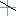
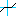
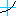
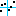
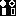
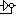

As Apogy is set of functionality
Workspace:
TODO!
| Name | Description |
|---|---|
| Fixed Time Source | A Time Source representing a fixed date and time. |
| Current Time Source | A Time Source that represents the current time, updated at a regular interval. |
| Selection-based Time Source | A Time Source that updates its time upon the selection of any Timed element in the UI. |
| Browseable Time Source | A Time Source that can be browsed, reset, played forward or reset, and accelerated. |
| Operation Calls Result List Time Source | A specialized Browseable Time Source that allows browsing a list of Operation Calls. |
| Name | Icon | Description |
|---|---|---|
| Time Trigger | Triggers at a fixed time interval (or only once if time <= 0). | |
| Controller Edge Trigger | Triggers when a rising edge is detected on the specified controller button state. | |
| Triggers when a falling edge is detected on the specified controller button state. | ||
| Triggers when either a rising or falling edge is detected on the specified button state. | ||
| Controller State Trigger | Triggers at a fixed time interval (or only once if time <= 0) if the specified controller button state ( boolean) matches the target. |
| Name | Icon | Description | Scaling Supported | Offset Supported | Dead Band Supported |
|---|---|---|---|---|---|
| Linear |  | Linear transfer function with end points specified. | Yes | Yes | No |
| Centered Linear |  | Linear transfer function with constraints that output is zero (0) for input falling within dead band.
Output linearly falls to zero at dead band limits. |
Yes | No | Yes |
| Parabolic |  | Second-order transfer function with end points specified. | Yes | Yes | No |
| Centered Parabolic | Parabolic output with constraint that output is zero (0) for input falling within dead band.
Slope is made continuous at dead band limits. |
Yes | No | Yes | |
| User Defined |  | Piecewise linear interpolation based on user-provided list of points. | No | No | No |
| Name | Icon | Description |
|---|---|---|
| EMF Feature Overlay | Displays any numerical or string value of a selected Feature on screen. The display includes the name of the Feature, its units, and the value. | |
| Camera Name Overlay | Displays the name of the camera, if applicable. | |
| Apogy Logo Overlay | Displays the Apogy Logo. | |
| FOV Overlay | Displays a cross hair with marks indicating degrees along the vertical and horizontal axes, centered on the FOV origin. The values are binded to the current camera FOV. | |
| EMF Feature Azimuth Elevation Overlay | Displays a cross hair with marks indicating degrees along the vertical and horizontal axes. The ABSOLUTE orientation is displayed. The values are bound to the current camera's Field of View (FOV) and the Azimuth and Elevation features selected. |
| Name | Icon | Description |
|---|---|---|
| Edge Filter |  | Detects edges by looking at the gradient of each channel ands replaces the channel by a value determined by the gradient. |
| Gain Filter |  | Changes the contrast of the image by allowing the user to specify the gain and bias of the colors in the image. |
| Gray Scale Filter | Converts image to gray-scaled image. The formula used is:
luma = 77 R + 151 G + 28 B |
|
| Invert Filter | Inverts all of the pixels in an image. This is done by subtracting each colour component from 255. | |
| Rescale Filter | Multiplies the input image by a scale factor. |
| Name | Icon | Description |
|---|---|---|
| Pointer Camera Tool | Allow the user to point in the camera image and then draws in the 3D environment, a ray showing where the selected position point projects into the 3D environment. |
TODO!
| Name | Icon | Description |
|---|---|---|
| Ruler 3D Tool | Shows a ruler between two points. | |
| Sun Vector 3D Tool | Shows the vector connecting the selected point to the current position of the Sun. | |
| Feature Of Interest Picking Tool | Allows the user to point and click to create a new
Feature Of Interest.
Note that the Feature Of Interest List, where the Feature Of Interests are created, must be set for this tool to work. |
|
| Trajectory 3D Tool | TODO! | |
| Path Planner Tool | TODO! | |
| Vehicle Path Planner Tool | TODO! | |
| Telecom Status Monitor Tool | TODO! |
| Button | Mouse Motion | Movement |
|---|---|---|
| Center | Forward | Move forwards |
| Back | Move backwards | |
| Left | Forward | Rotate downwards |
| Back | Rotate upwards | |
| Left | Rotate to the left | |
| Right | Rotate to the right | |
| Right | Forward | Translate downwards |
| Back | Translate upwards | |
| Left | Translate to the right | |
| Right | Translate to the left |
| Key | Function |
|---|---|
| Q | Quick: Accelerate translation |
| L | Level: Set view point orientation so that the user line of sight is level (perpendicular to the Z axis.) |
| P | Picking: Enables the picking mode(used by some 3D tools.) Picking Enabled shows up on the left hand side of the viewer when activated. |
TODO!
TODO!
TODO!